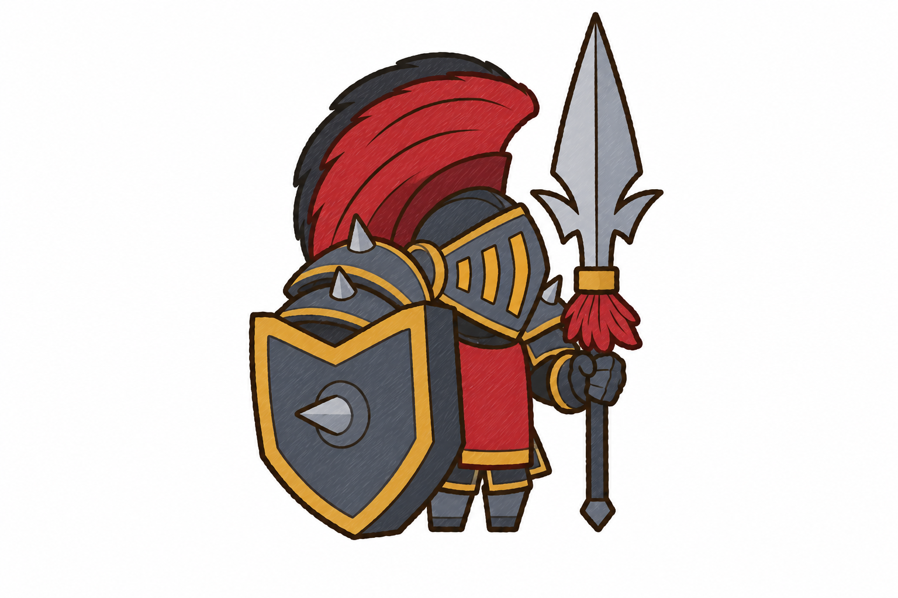
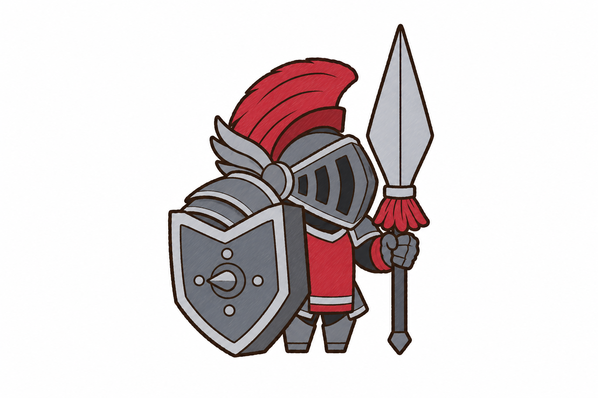
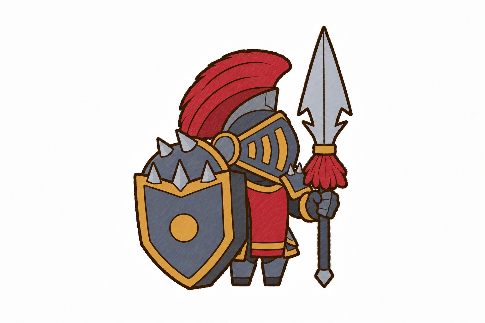

Chiến binh sắt DẠNG 2 (tướng 2 đảo Kim): 3 hướng trên cùng rig dạng 1
Tỉ lệ đã đổi trên rig: mũ nhỏ lại (0,82) cho bớt chibi, mào to hơn, giáp vai to hơn. Cùng dáng, cùng chỗ từng mảnh với dạng 1 nên dùng lại
mọi clip. Phần thêm (gai vai, núm gai khiên, cánh / sống mũ, mũi giáo to bản) sẽ là mảnh gắn lên đúng xương.
Dạng 1 đã duyệt (để so)

A · thép đen + vàng + đỏ thẫm: mào hai lớp (đỏ phủ trên lớp đen), khe mặt nạ hổ phách, giáp vai có gai nhô trên khiên, khiên viền vàng núm gai, giáo hai cánh khâu vàng. Khác dạng 1 rõ nhất

B · thép xám thẫm + bạc + đỏ: giữ màu dòng nhưng đậm hơn, cánh thép vuốt ra sau bên trái mũ, giáp vai hai lớp, khiên viền bạc núm gai + bốn đinh, giáo to dài. Gần dạng 1 nhất

C · gang xanh + đồng thau + đỏ: khe mặt nạ vàng nhạt, giáp vai nhiều gai, khiên viền đồng thau núm tròn, giáo có ngạnh